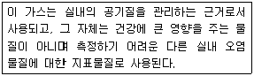
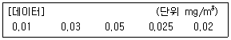
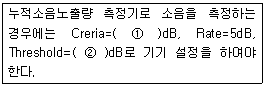
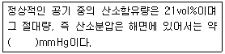
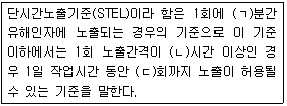

산업위생관리기사 (2009-07-26 기출문제)
1과목: 산업위생학개론
1. 산업재해손실의 평가에 있어서 하인리히 방식기준으로 직접비와 간접비의 비율은 어느 정도로 나타나는가? (단, 직접비 : 간접비로 표현한다.)
- 1:3
- 1:4
- 1:10
- 1:16
(정답률: 72%)

2. 육체적 작업능력(PWC)이 15kcal/min인 근로자가 1일 8시간 동안 물체를 운반하고 있다. 이 때의 작업대사량은 8kcal/min이고, 휴식시 대사량은 3kcal/min이라면, 매 시간당 휴식시간과 작업시간으로 가장 적절한 것은? (단, Hertig식을 적용한다.)
- 휴식시간은 28분, 작업시간은 32분이다.
- 휴식시간은 30분, 작업시간은 30분이다.
- 휴식시간은 32분, 작업시간은 28분이다.
- 휴식시간은 36분, 작업시간은 24분이다.
(정답률: 82%)
3. 산업피로의 측정방법 중 감각기능검사의 측정대상항목에 속하는 것은?
- 근전도
- 심박수
- 민첩성
- 반응시간
(정답률: 66%)
4. 전신피로 정도를 평가하기 위해 작업 직후의 심박수를 측정한다. 작업종료 후 30~60초, 60~90초, 150~180초 사이의 평균 맥박수를 각각 HR30~60, HR60~90, HR150~180라 할 때 심한 전신피로 상태로 판단되는 경우는?
- HR150~180이 110을 초과하고,HR30~60와 HR60~90차이가 10 미만인 경우
- HR60~90이 110을 초과하고,HR150~180와 HR30~60차이가 10 미만인 경우
- HR30~60이 110을 초과하고,HR150~180와 HR60~90차이가 10 미만인 경우
- HR30~60, HR150~180 의 차이가 10이상이고, HR150~180, HR60~90 의 차이가 10미만인 경우
(정답률: 97%)
5. 먼지가 호흡기로 들어올 때 인체가 방어하는 부위별 메카니즘으로 바르게 연결된 것은?
- 기관지 : 점액섬모운동폐포 : 대식세포에 의한 정화
- 기관지 : 면역작용폐포 : 대식세포에 의한 정화
- 기관지 : 대식세포에 의한 정화폐포 : 점액섬모운동
- 기관지 : 대식세포에 의한 정화폐포 : 면역작용
(정답률: 74%)
6. 크롬에 노출되지 않은 집단에서 질병 발생율은 1.0 이었고, 노출된 집단에서의 질병 발생율은 1.2 였다. 다음 중 이에 대한 설명으로 틀린 것은?
- 이 유해물질에 대한 상대위험도는 0.8 이다.
- 이 유해물질에 대한 상대위험도는 1.2 이다.
- 노출집단에서 위험도가 더 큰 것으로 나타났다.
- 노출되지 않은 집단에서 위험도가 더 작은 것으로 나타났다.
(정답률: 74%)
7. Diethyl ketone(TLV = 200ppm)을 사용하는 작업장의 작업 시간이 9시간일 때 허용기준을 보정하였다. OSHA 보정법과 법과 Brief and Scala 보정법을 적용하였을 경우 보정된 허용기준치 간의 차이는 약 몇 ppm인가?
- 5.⑤
- 11.11
- 22.22
- 33.33
(정답률: 84%)
8. 다음 중 산업피로에 대한 대책으로 옳은 것은?
- 피로한 후 장시간 휴식이 휴식시간을 여러번으로 나누는것 보다 효과적이다.
- 움직이는 작업은 피로를 가중시키므로 될수록 정적인 작업으로 전환하도록 한다.
- 커피, 홍차, 엽차 및 비타민B1은 피로회복에 도움이 됨으로 공급한다.
- 신체리듬의 적응을 위하여 야간근무는 연속으로 7일 이상 실시하도록 한다.
(정답률: 84%)
9. 산업위생전문가의 윤리강령 중'전문가로서의 책임'과 가장 거리가 먼 것은?
- 기업체의 기밀은 누설하지 않는다.
- 과학적방법의 적용과 자료의 해석에서 객관성을 유지한다.
- 근로자, 사회 및 전문 직종의 이익을 위해 과학적 지식을 공개하거나 발표하지 않는다.
- 전문적 판단이 타협에 의하여 좌우될 수 있는 상황에는 개입하지 않는다.
(정답률: 95%)
10. 다음 설명에 해당하는 가스는 무엇인가?

- 일산화탄소
- 이산화탄소
- 황산화물
- 질소산화물
(정답률: 96%)
11. 산업안전보건법에 따라 작업환경측정을 실시한 경우 작업환경 측정결과보고서는 시료채취를 마친날부터 며칠이내에 이내에 관할 지방노동관서의 장에게 제출하여야 하는가?
- 7일
- 15일
- 30일
- 60일
(정답률: 73%)
12. 300명의 근로자가 1주일에 44시간, 연간 50주를 근무하는 사업장이 있다. 이 사업장에서 1년동안 50건의 재해로 60명의 재해자가 발생하였다면 도수율은 약 얼마인가? (단. 근로자들은 질병, 기타 사유로 인하여 총근로시간의 5%를 결근 하였다.)
- 75.76
- 79.74
- 90.91
- 95.69
(정답률: 77%)
13. 다음 중 작업시작 및 종료시 호흡의 산소소비량에 대한 설명으로 틀린 것은?
- 산소소비량은 작업부하가 계속 증가하면 일정한 비율로 같이 증가한다.
- 작업부하 수준이 최대 산소소비량 수준보다 높아지게 되면 젖산의 제거 속도가 생성속도에 못 미치게 된다.
- 작업이 끝난 후에 남아있는 젖산을 제거하기 위해서는 산소가 더 필요하며, 이 때 동원되는 산소소비량을 산소부채(oxygen debt)라 한다.
- 작업이 끝난 후에도 맥박과 호흡수가 작업개시 수준으로 즉시 돌아오지 않고 서서히 감소한다
(정답률: 87%)
14. 18세기 영국의 Percivall Pott에 의해 보고된 최초의 직업성 암의 원인물질로 옳은 것은?
- 검댕(soot)
- 수은(mercury)
- 아연(zinc)
- 납(lead)
(정답률: 95%)
15. 다음 중 영상표시단말기(VDT)의 작업자세로 적절하지 않은 것은?
- 발의 위치는 앞꿈치만 닿을 수 있도록 한다.
- 눈과 화면의 중심 사이의 거리는 40cm이상이 되도록 한다.
- 윗 팔과 아랫 팔이 이루는 각도는 90도 이상이 되도록 한다.
- 아래팔은 손등과 일직선을 유지하여 손목이 꺽이지 않도록 한다.
(정답률: 87%)
16. 납축전지 제조업에서의 공기중의 납 농도가 다음과 같을 때 기하표준편차(GSD)는 약 몇 mg/m3 인가?

- 0.0148
- 0.0237
- 0.2559
- 1.803
(정답률: 16%)
17. 사무실 공기관리 지침에서 관리하고 있는 오염물질 중 포름알데히드(HCHO)에 대한설명으로 틀린 것은?
- 자극적인 냄새를 가지며, 메틸알데히드이라고도 한다.
- 메탄올을 산화시켜 얻는 기체로 환원성이 강하다.
- 시료채취는 고체흡착관 또는 캐니스터로 수행한다.
- 산업안전보건법상 발암성추정물질(A2)로 분류되어 있다.
(정답률: 58%)
18. 직업성 질환 중 직업상의 업무에 의하여 1차적으로 발생 하는 질환을 무엇이라 하는가?
- 속발성 질환
- 합병증
- 일반질환
- 원발성 질환
(정답률: 87%)
19. 산업안전보건법상“충격소음작업”이라 함은 몇 dB이상의 소음을 1일 100회 이상 발생하는 작업을 말하는가?
- 110
- 120
- 130
- 140
(정답률: 77%)
20. 미국 국립산업안전보건연구원(NIOSH)의 들기작업 권고기준(Recommended Weight Limit, RWL)을 구하는 산식에 포함되는 변수가 아닌 것은?
- 작업빈도
- 허리구부림 각도
- 물체의 이동거리
- 수평 및 수직으로 물체를 들어 올리고자 하는 거리
(정답률: 64%)
2과목: 작업위생측정 및 평가
21. 1차 표준기구와 가장 거리가 먼 것은?
- 흑연 피스톤 미터
- 폐활량계
- 오리피스 미터
- 가스 치환병
(정답률: 76%)
22. 어느 작업환경에서 발생되는 소음원의 소음레벨이 92dB로서 4개이다. 이때의 전체소음레벨은?
- 96dB
- 98dB
- 100dB
- 102dB
(정답률: 96%)
23. 어떤 작업장에서 50% Acetone, 30% Benzene 그리고 20% Xylene의 중량비로 조성된 용제가 증발하여 작업환경을 오염시키고 있다. 각각의 TLV는 1600 mg/m3, 720mg/m3, 그리고 670mg/m3일때 이 작업장의 혼합물의 허용농도는 ?
- 약 675 mg/m3
- 약 775 mg/m3
- 약 875 mg/m3
- 약 975 mg/m3
(정답률: 66%)
24. 실리가겔이 활성탄에 비해 갖는 특징으로 틀린것은?
- 극성물질의 탈착을 방지할 수 있어 추출액의 기기분석 방해 작용이 적다
- 활성탄에 비해 수분을 잘 흡수하여 습도에 민감하다.
- 유독한 이황화탄소를 탈착 용매로 사용하지 않는다.
- 활성탄으로 채취가 어려운 아닐린, 오르쏘-톨루이딘 등의 아민류의 채취가 가능하다.
(정답률: 47%)
25. 유해가스의 생리학적 분류를 단순 질식제, 화학 질식제, 자극가스 등으로 할 때 다음 중 단순질 식제로 구분되는 것은?
- 일산화탄소
- 아세틸렌
- 포름알데히드
- 오존
(정답률: 53%)
26. 활성탄의 제한점에 관한 설명으로 맞는 것은?
- 휘발성이 매우 큰 저분자량의 탄화수소 화합물의 채취효율이 떨어짐
- 암모니아, 염화수소와 같은 고비점 화합물에 비효과적임
- 케톤의 경우 활성탄 표면에서 물이 제외된 반응에 의해 파괴되어 탈착률과 안정성에서 부적절함
- 표면의 흡착력으로 인해 반응성이 작은 mercaptan과 aldehyde 포집에 부적합함
(정답률: 38%)
27. 검지관의 단점으로 틀린 것은?
- 민감도가 낮으며 비교적 고농도에 적용이 가능하다.
- 미리 측정대상물질의 동정이 되어 있어야 측정이 가능하다.
- 색변화가 시간에 따라 변화하므로 측정자가 정한 시간에 읽어야 한다.
- 특이도가 낮다. 즉 다른 방해물질의 영향을 받기 쉬워 오차가 크다.
(정답률: 57%)
28. 알고 있는 공기 중 농도 만드는 방법인 Dynamic Method에 관한 설명으로 틀린 것은?
- 다양한 농도범위에서 제조 가능함
- 농도변화를 줄 수 있음
- 만들기 간편하고 저렴함
- 온습도 조절이 가능함
(정답률: 74%)
29. 흡착제를 이용하여 시료채취를 할 때 영향을 주는 인자에 관한 설명으로 틀린 것은?
- 온도 : 온도가 높을수록 입자의 활성도가 커져 흡착에 좋으며 저온일수록 흡착능이 감소한다.
- 시료채취속도 : 시료채취속도가 높고 코팅된 흡착제 일수록 파과가 일어나기 쉽다.
- 흡착제의 크기 : 입자의 크기가 작을수록 표면적이 증가 하여 채취효율이 증가하나 압력 강하가 심하다.
- 오염물질 농도 : 공기 중 오염물질 농도가 높을수록 파과용량은 증가하나 파과 공기량은 감소한다.
(정답률: 79%)
30. 유기용제인 trichloroethylene의 근로자 노출농도를 측정하고자 한다. 과거의 노출농도를 조사해 본 결과 평균 15ppm 이었으며 활성탄관(100mg/50mg)을 이용하여 0.15L/분으로 채취하였다. trichloroethylene의 분자량은 131.39이고 가스크로마토그래피의 정량한계는 시료당 0.5mg이라면 채취해야 할 최소한의 시간은?
- 약 52분
- 약 42분
- 약 32분
- 약 22분
(정답률: 64%)
31. 다음은 소음측정에 관한 내용이다. ( )안에 맞는 것은?

- ① 70 ② 80
- ① 80 ② 70
- ① 80 ② 90
- ① 90 ② 80
(정답률: 91%)
32. 원통형 비누거품미터를 이용하여 공기시료채취기의 유량을 보정하고자 한다. 원통형 비누거품미터의 내경은 4cm이고 거품막이 30cm의 거리를 이동하는 데 30초의 시간이 걸렸다면 이 공기시료채취기의 유량은?
- 약 0.75L/min
- 약 1.65L/min
- 약 2.15L/min
- 약 3.35L/min
(정답률: 65%)
33. 작업환경측정시 온도 표시에 관한 설명으로 틀린 것은? (단, 노동부 고시 기준)
- 열온 : 50~60℃
- 상온 : 15~25℃
- 실온 : 1~35℃
- 미온 : 30~40℃
(정답률: 77%)
34. 가스크로마토그래피의 검출기에 관한 설명으로 틀린 것은?
- 온도를 조절할 수 있는 가열기구 및 이를 측정할 수 있는 측정기구가 갖추어져야 한다.
- 감도가 좋고 안정성과 재현성이 있어야 한다.
- 시료의 화학종과 운반기체의 종류에 따라 각기다르게 감도를 나타낸다.
- 시료에 대한 선형적 감응을 방지하여야 한다.
(정답률: 70%)
35. Hexane의 부분압은 120mmHg(OEL 500ppm)이었을 때 Vapor Hazard Ratio는?
- 218
- 316
- 424
- 512
(정답률: 79%)
36. 고열 측정구분에 의한 측정기기와 측정시간의 연결이 틀린 것은? (단. 노동부 고시 기준)
- 습구온도 - 0.5도 간격의 눈금이 있는 아스만통풍건습계 - 25분 이상
- 습구온도 - 자연습구온도를 측정할 수 있는 기기 - 자연습구온도계 5분이상
- 흑구 및 습구흑구온도 - 직경이 5센티미터 이상 되는 흑구 온도계 또는 습구흑구온도를 동시에 측정할 수 있는 기기- 직경이 15센티미터일 경우 25분 이상
- 흑구 및 습구흑구온도 - 직경이 5센티미터 이상 되는 흑구 온도계 또는 습구흑구온도를 동시에 측정할 수 있는 기기- 직경이 7.5센티미터 또는 5센티미터일 경우 15분 이상
(정답률: 91%)
37. 입자상 물질의 측정 매체인 MCE(Mixed celluloseester membrance)여과지의 설명으로 틀린 것은?
- 산에 쉽게 용해된다.
- 입자상 물질에 대한 중량분석에 주로 적용된다
- 시료가 여과지의 표면 또는 표면 가까운 데에 침착되므로 석면, 유리섬유 등 현미경 분석을 위한 시료채취에 이용 된다.
- MCE여과지의 원료인 셀룰로오스는 수분을 흡수 하는 특성을 가지고 있다.
(정답률: 65%)
38. 고 유량 펌프를 이용하여 0.424m3의 공기를 채취하고, 실험실에서 여지를 10% 질산 10L로 용해 하였다. 원자 흡광광도계로 농도를 분석하고 검량선으로 비교 분석한 결과 질산 시료액의 농도는 108μgPb/mL였다. 채취기간중 납먼지의 농도(mg/m3)는?
- 0.87
- 1.65
- 2.55
- 3.24
(정답률: 60%)
39. 작업환경측정을 위한 소음측정 횟수에 관한 설명으로 틀린 것은? (단, 노동부 고시 기준)
- 단위작업장소에서 소음수준은 규정된 측정위치 및 지점에서 1일 작업시간 동안 6시간 이상연속측정하거나, 작업시간을 1시간 간격으로 나누어 6회 이상 측정하여야 한다.
- 소음의 발생특성이 연속음으로서 측정치가 변동이 없다고 자격자 또는 지정측정기관이 판단한 경우에는 1시간 동안을 등 간격으로 나누어 3회 이상 측정할 수 있다.
- 단위작업장소에서 소음발생시간이 6시간 이내인 경우에는 발생시간 동안 연속측정하거나 등 간격으로 나누어 4회 이상 측정하여야 한다.
- 단위작업장소에서 소음발생원에서 발생시간이 간헐적인 경우에는 연속측정하거나 등 간격으로 나누어 2회 이상 측정하여야 한다.
(정답률: 64%)
40. 유사노출그룹(HEG)을 설정하는 목적으로 가장 거리가 먼 내용은?
- 근로자의 과반수이상을 유사노출그룹에 포함시켜 작업별 유해인자를 파악할 수 있다.
- 시료 채취수를 경제적으로 할 수 있다.
- 역학조사를 수행할 때 유사노출그룹의 노출 자료를 활용 할 수 있다.
- 모든 작업자의 노출농도를 평가할 수 있다.
(정답률: 50%)
3과목: 작업환경관리대책
41. 1시간에 2L의 MEK가 증발되어 공기를 오염시키는 작업장이 있다. K치를 6, 분자량을 72.06, 비중을 0.8⑤, TLV를 200ppm으로 할 때 이 작업장의 오염물질을 전체 환기 시키기 위하여 필요한 환기량(m3/min)은? (21℃, 1기압기준)
- 약 270
- 약 340
- 약 430
- 약 520
(정답률: 63%)
42. 어느 유체관의 동압(Velocity pressure)이 20mmH2O이고 관의 직경이 25cm일 때 유량(m3/sec)은? (21℃,1기압기준)
- 약 0.89
- 약 1.72
- 약 2.67
- 약 3.53
(정답률: 56%)
43. 다음은 직관의 압력손실에 관한 설명이다. 잘못된 것은?
- 직관의 마찰계수에 비례한다.
- 직관의 길이에 비례한다.
- 직관의 직경에 비례한다.
- 속도(관내유속)의 제곱에 비례한다.
(정답률: 78%)
44. 후드의 유입계수가 0.82, 속도압이 50mmH2O 일 때 후드압력손실은?
- 9.7 mmH2O
- 16.2 mmH2O
- 24.4 mmH2O
- 38.6 mmH2O
(정답률: 93%)
45. 원심력 송풍기 중 전향 날개형 송풍기에 대한 설명으로 틀린 것은?
- 송풍기의 임펠러가 다람쥐 쳇바퀴 모양으로 생겼다.
- 송풍기 깃이 회전방향과 동일한 방향으로 설계되어 있다.
- 큰 압력손실에도 송풍량을 일정하게 유지할 수 있는 장점이 있다.
- 다익형 송풍기라고도 한다.
(정답률: 72%)
46. 자연환기와 강제환기의 장.단점으로 틀린 것은?
- 강제환기는 외부조건에 관계없이 작업환경을 일정하게 유지시킬 수 있다.
- 자연환기는 환기량 예측 자료를 구하기 어렵다.
- 자연환기는 적당한 온도 차이와 바람이 있다면 상당히 비용이 효과적이다.
- 자연환기는 외부 기상조건과 내부 작업조건에 따른 환기량 변화가 적다.
(정답률: 67%)
47. 작업환경의 관리원칙인 대치 개선 방법으로 틀린것은?
- 성냥 제조시: 황린 대신 적린을 사용함
- 세탁시: 화재 예방을 위해 석유나프타 대신 4클로로 에틸렌을 사용함
- 분말로 출하되는 원료를 고형상태의 원료로 출하함
- 땜질한 납을 oscillating-type sander로 깍던 것을 고속회전 그라인더를 이용함
(정답률: 83%)
48. 어떤 송풍기의 풍전압이 200mmH2O이고, 풍량이 300m3/min, 효율이 0.7일때 소요동력(kw)는?
- 8
- 10
- 12
- 14
(정답률: 58%)
49. 입자의 직경이 5μm이고 밀도가 1.5g/m3인 입자의 종단 속도는(cm/sec)?
- 0.07
- 0.11
- 0.23
- 0.33
(정답률: 81%)
50. 다음의 보호장구의 재질 중 극성용제에 가장 효과적인 것은? (단, 극성용제에는 알코올, 물, 케톤류 등을 포함한다.)
- Neoprene고무
- Butyl 고무
- Vitron
- Nitrile 고무
(정답률: 79%)
51. 사용하는 흡수관의 제품(흡수)능력인 사염화탄소 농도 0.5%에 대한 유효시간이 100분인 경우, 사염화탄소 농도가 0.2%일 때 유효시간은?
- 200분
- 225분
- 250분
- 275분
(정답률: 77%)
52. 작업장에 설치된 국소배기장치의 제어속도를 증가시키기 위해 송풍기 날개의 회전속도를 20% 증가 시켰다면 동력은 약 몇%증가할 것으로 예측되는가? (단, 기타 조건은 같다고 가정함)
- 약 40%
- 약 48%
- 약 73%
- 약 86%
(정답률: 41%)
53. 슬롯 길이 3m, 제어속도 2m/sec인 슬롯 후드가 있다. 오염원이 1m 떨어져 있을 경우 필요환기량(m3/min)은? (단, 공간에 설치하며 플랜지는 부착되어 있지않음)
- 226
- 688
- 1332
- 2461
(정답률: 49%)
54. CCl4의 증기압이 70mmHg이라면 이때 공기 중 포화농도는 몇 %인가? (단, 대기압1기압, 기온 21℃, CCl4분자량 154)
- 5.2%
- 9.2%
- 12.3%
- 17.3%
(정답률: 75%)
55. 톨루엔을 취급하는 근로자의 보호구 밖에서 측정한 톨루엔 농도가 100ppm이었고 보호구 안의 농도가 50ppm으로 나왔다면 보호계수(Protection factor, PF)값은?
- 100
- 20
- 10
- 2
(정답률: 87%)
56. 작업장에 직경이 3μm이면서 비중이 2.5인 입자와 직경이 4μm이면서 비중이 1.2인 입자가 있다. 작업장의 높이가 5m일 때 모든 입자가 가라앉는 최소 시간은?
- 약 145분
- 약 125분
- 약 115분
- 약 85분
(정답률: 18%)
57. 다음 중 귀마개에 관한 설명으로 틀린 것은?
- 휴대가 편하다.
- 고온작업장에서도 불편 없이 사용할 수 있다.
- 근로자들이 보호구를 착용하였는지 쉽게 확인할 수 있다.
- 제대로 착용하는데 시간이 걸리고 요령을 습득해야 한다.
(정답률: 89%)
58. 이산화탄소 가스의 비중은? (단, 0℃, 1기압 기준)
- 1.34
- 1.41
- 1.52
- 1.63
(정답률: 48%)
59. 강제환기를 실시할 때 환기효과를 제고할 수 있는 원칙으로 틀린 것은?
- 오염물질 배출구는 오염원과 적절한 거리를 유지하도록 설치하여 점환기 현상을 방지한다.
- 공기배출구와 근로자의 작업위치 사이에 오염원이 위치하여야 한다.
- 건물 밖에서 배출된 오염공기가 다시 건물안으로 유입되지 않도록 배출구 높이를 적절히 설계하고 창문이나 문 근처에 위치하지 않도록 한다.
- 공기와 배출되면서 오염장소를 통과하도록 공기 배출구와 유입구의 위치를 선정한다.
(정답률: 84%)
60. 국소배기시설(후드)의 필요 환기량을 감소시키기 위한 방법으로 틀린 것은?
- 가급적으로 공정의 포위를 최소화 한다.
- 포집형이나 레시버형 후드를 사용할 때에는 가급적 후드를 배출 오염원에 가깝게 설치한다.
- 공정에서 발생 또는 배출되는 오염물질의 절대량을 감소시키는 것이 곧 필요 환기량을 감소시키는 것이다.
- 후드 개구면에서 기류가 균일하게 분포되도록 설계한다.
(정답률: 86%)
4과목: 물리적유해인자관리
61. 다음 중 적외선의 생체작용에 관한 설명으로 잘못된 것은?
- 적외선이 조직에 흡수되면 화학반응을 일으켜 조직의 온도가 상승한다.
- 적외선이 신체에 조사되면 일부는 피부에서 반사되고 나머지는 조직에 흡수된다.
- 조직에서의 흡수는 수분함량에 따라 다르다.
- 조사부위의 온도가 오르면 혈관이 확장되어 혈류가 증가되며 심하면 홍반을 유발하기도 한다.
(정답률: 83%)
62. 고온의 노출기준을 나타낼 경우 중등작업의 계속 작업시 노출기준은 몇 ℃(WBGT) 인가?
- 26.7
- 28.3
- 29.7
- 31.4
(정답률: 47%)
63. 다음 중 저온환경에 의한 신체의 생리적 반응으로 틀린 것은?
- 피부혈관이 수축되어 피부온도가 감소한다.
- 근육활동과 조직대사가 감소된다.
- 근육의 긴장과 떨림이 발생한다.
- 피부혈관의 수축으로 순환능력이 감소되어 혈압은 일시적으로 상승된다.
(정답률: 53%)
64. 다음 중 열경련의 치료 방법으로 가장 적절한 것은?
- 5% 포도당 공급
- 수분 및 Nacl 보충
- 체온의 급속한 냉각
- 더운 커피 또는 강심제의 투여
(정답률: 62%)
65. 다음 중 마이크로파의 에너지량과 거리와의 관계에 관한 설명으로 옳은 것은?
- 에너지량은 거리의 제곱에 비례한다.
- 에너지량은 거리에 비례한다.
- 에너지량은 거리의 제곱에 반비례한다.
- 에너지량은 거리에 반비례한다.
(정답률: 60%)
66. 전리방사선의 흡수선량이 생체에 영향을 주는 정도로 표시하는 선당량(생체실효선량)의 단위는?
- R
- Ci
- Sv
- Gy
(정답률: 77%)
67. 다음 중 인체에 도달되는 진동의 장해를 최소화시키는 방법과 거리가 먼 것은?
- 발진원을 격리시킨다.
- 진동의 노출기간을 최소화시킨다.
- 훈련을 통한 신체의 적응력을 향상시킨다.
- 진동을 최소화하기 위하여 공학적으로 설계하고 관리한다.
(정답률: 90%)
68. 다음 중 방사능의 방어대책으로 볼 수 없는 것은?
- 발생량을 감소시킨다.
- 거리를 가능한 한 멀리한다.
- 방사선을 차폐한다.
- 노출시간을 줄인다.
(정답률: 85%)
69. 다음 중 음원의 파워레벨(PWL, power level)에 대한 설명으로 틀린 것은?
- 음원의 출력을 나타낸 것이다.
- 동일한 음원의 PWL은 측정하는 장소에 따라서 다른 수치를 나타낸다.
- 일반적으로 PWL이 큰 것부터 방지대책을 강구함이 좋다
- 음원의 출력이 10배로 되면 PWL은 10dB 크게 된다.
(정답률: 69%)
70. 음력이 2Watt인 소음원 으로부터 50m 떨어진 지점에서의 음압수준(sound pressure level)은 약 몇 dB 인가? (단, 공기의 밀도는 1.2kg/m3, 공기에서의 음속은 344m/s)
- 76.6
- 78.2
- 79.4
- 80.7
(정답률: 58%)
71. 다음 ( )안에 알맞은 수치는?

- 160
- 180
- 210
- 230
(정답률: 87%)
72. 옥외에서 측정한 흑구온도가 35℃, 습구온도가 22℃, 건구온도가 25℃ 일때 습구흑구온도지수 (WBGT)는?
- 21.9℃
- 22.9℃
- 24.9℃
- 25.9℃
(정답률: 88%)
73. 다음 중 소음계의 A, B, C특성에 대한 설명으로 틀린 것은?
- A특성치란 대략 40phon의 등감곡선과 비슷하게 주파수에 따른 반응을 보정하여 측정한 음압 수준을 말한다.
- B특성치와 C특성치는 각각 70phon과 100phon의 등감곡선과 비슷하게 보정하여 측정한 값을 말한다.
- 일반적으로 소음계는 A,B,C 특성에서 음압을 측정할수 있도록 보정되어 있으며 모든 주파수의 음압수준을 보정 없이 그대로 측정할 수도 있다.
- A특성치와 C 특성치 간의 차가 크면 고주파음이고, 차가 작으면 저주파음으로 추정할 수 있다.
(정답률: 60%)
74. 다음 중 광원으로부터의 밝기에 관한 설명으로 틀린 것은?
- 루멘은 1촉광의 광원으로부터 한 단위 입체각으로 나가는 광속의 단위이다.
- 밝기는 조사평면과 광원에 대한 수직평면이 이루는 각(cosine)에 비례한다.
- 밝기는 광원으로부터의 거리 제곱에 반비례한다.
- 1촉광은 4∏루멘으로 나타낼 수 있다.
(정답률: 35%)
75. 다음 중 사람이 느끼는 최소 진동역치로 옳은 것은?
- 35±5dB
- 45±5dB
- 55±5dB
- 65±5dB
(정답률: 65%)
76. 다음 중 이상기압에 의해서 발생하는 직업병에 영향을 주는 유해인자가 아닌 것은?
- 이산화탄소(CO2)
- 산소(O2)
- 질소(N2)
- 이산화황(SO2)
(정답률: 86%)
77. 다음 중 일반적으로 청력도(Audiogram) 검사에서 사용하지 않는 주파수는?
- 500Hz
- 2000Hz
- 4000Hz
- 5000Hz
(정답률: 48%)
78. 자외선을 조사하였을 때 홍반, 발진, 피부암 등을 일으키는 자외선 B(UV-B)의 파장범위로 옳은 것은?
- 80 ~ 215 mm
- 100 ~ 280 mm
- 280 ~ 315 mm
- 315 ~ 400 mm
(정답률: 80%)
79. 다음 중 산업안전보건법상의 이상기압에 대한 설명으로 틀린 것은?
- “이상기압”이라 함은 압력이 매 제곱센티 미터 당 1킬로그램 이상인 기압을 말한다.
- 고압작업에 근로자를 종사하도록 하는 때에는 작업실의 공기의 체적이 근로자 1인당 4세제곱 미터 이상이 되도록 하여야 한다.
- 고압작업자에게 기압조절실에서 가압을 하는 때에는 1분에 매 제곱센티미터 당 0.8킬로그램 이하의 속도로 하여야 한다.
- 잠수 작업을 하는 잠수 작업자에게 고농도의 산소만을 마시도록 하여야 한다.
(정답률: 89%)
80. 다음 중 1000Hz 에서의 압력수준 dB을 기준으로 하여 등감곡선을 소리의 크기로 나타내는 단위로 사용되는 것은?
- sone
- mel
- bell
- phon
(정답률: 58%)
5과목: 산업독성학
81. 다음 중 악성 중피종(mesothelioma)을 유발시키는 물질은?
- 석면
- 주석
- 아연
- 크롬
(정답률: 71%)
82. 공기 중의 두 가지 물질이 혼합되어 상대적 독성수치가'2+3=5' 와 같이 나타날 때 두 물질 간에 일어난 상호작용을 무엇이라 하는가?
- 상가작용 (additive effect)
- 잠재작용 (Potentiation)
- 상승작용 (synergistics)
- 길항작용 (antagonism)
(정답률: 79%)
83. 다음 중 납중독에 대한 대표적인 임상증상으로 볼 수 없는 것은?
- 위장장해
- 안구장해
- 중추신경장해
- 신경 및 근육계통의 장해
(정답률: 86%)
84. 다음 중 단백질을 침전시키며 thiol(-SH)기를 가진 효소의 작용을 억제하여 독성을 나타내는 것은?
- 구리
- 아연
- 코발트
- 수은
(정답률: 72%)
85. 다음 중 비소의 체내 대사 및 영향에 관한 설명과 관계가 가장 적은 것은?
- 생체내의 -SH기를 갖는 효소작용을 저해시켜 세포 호흡에 장해를 일으킨다.
- 뼈에는 비산칼륨의 형태로 축적된다.
- 주로 모발, 손톱 등에 축적된다.
- MMT를 함유한 연료제조에 종사하는 근로자에게 노출되는 일이 많다.
(정답률: 55%)
86. 방향족 탄화수소 중 만성노출에 의한 조혈장해를 유발시키는 것은?
- 벤젠
- 톨루엔
- 클로로포름
- 나프탈렌
(정답률: 92%)
87. 다음 중 산업안전보건법상 발암성 물질로 확인된 물질(A1)에 포함되어 있지 않은 것은?
- 벤지딘
- 베릴륨
- 염화비닐
- 벤젠
(정답률: 23%)
88. 동물을 대상으로 양을 투여했을 때 독성을 초래하지는 않지만 대상의 50%가 관찰 가능한 가역적인 반응이 나타나는 작용량을 무엇이라고 하는가?
- ED50
- LC50
- LD50
- TD50
(정답률: 80%)
89. 다음 중 피부독성에 대한 설명으로 틀린 것은?
- 피부에 접촉하는 화학물질의 통과속도는 일반적으로 각질층에서 가장 느리다.
- 피하지방은 자외선의 유해성을 감소시키는 역할을 한다.
- 인종, 성별, 계절은 직업성 피부질환에 영향을 주는 간접인자이다.
- 접촉성 피부염의 대부분은 자극성 접촉 피부염이다.
(정답률: 76%)
90. 다음 중 methyl n-butyl ketone에 노출된 근로자의 뇨중 배설량으로 생물학적 노출지표에 이용되는 물질은?
- phenol
- quinol
- 8-hydroxy quinone
- 2,5-hexanedione
(정답률: 82%)
91. 다음 설명의 ( )안에 알맞은 내용으로 나열된 것은?

- ㄱ : 15 ㄴ : 1 ㄷ : 4
- ㄱ : 20 ㄴ : 2 ㄷ : 5
- ㄱ : 20 ㄴ : 3 ㄷ : 3
- ㄱ : 15 ㄴ : 1 ㄷ : 2
(정답률: 85%)
92. 입자상 물질의 호흡기계 침착 기전 중 길이가긴 입자가 호흡기계로 들어오면 그 입자의 가장자리가 기도의 표면을 스치게 됨으로써 침착하는 현상은?
- 충돌
- 침전
- 차단
- 확산
(정답률: 61%)
93. 다음 중 생체 내에서 혈액과 화학작용을 일으켜서 질식을 일으키는 물질은?
- 수소
- 헬륨
- 질소
- 일산화탄소
(정답률: 78%)
94. 구리의 독성에 대한 인체실험 결과, 안전흡수량이 체중 kg당 0.008mg 이었다. 1일 8시간 작업시의 허용농도는 약 몇 mg/m3인가? (단, 근로자 평균 체중은 70kg, 작업시의 환기율은 1.45m3/h 로 가정한다.)
- 0.035
- 0.048
- 0.⑤6
- 0.064
(정답률: 86%)
95. 산업안전보건법에서 정하는 총분진의 노출기준은 유리규산 (SiO2)의 함유율에 따라 제1종~제3종으로 분류된다. 다음 중 2종 분진의 유리규산 함유율과 노출기준으로 옳은 것은?
- 함유율 : 1%이하, 노출기준 : 5mg/m3
- 함유율 : 1%이하, 노출기준 : 10mg/m3
- 함유율 : 30%미만, 노출기준 : 5mg/m3
- 함유율 : 30%이상, 노출기준 : 5mg/m3
(정답률: 24%)
96. 다음 중 호흡기계 발암성과의 관련성이 가장 낮은 것은?
- 석면
- 크롬
- 용접흄
- 황산니켈
(정답률: 55%)
97. 다음 중 무기성분진에 의한 진폐증이 아닌 것은?
- 규폐증 (silicosis)
- 연초폐증 (tabacosis)
- 용접공폐증 (welders lung)
- 흑연폐증 (graphite lung)
(정답률: 67%)
98. 벤젠에 노출되는 근로자 10명이 6개월 동안 근무하였고, 5명이 2년 동안 근무하였을 경우 노출인년(person-years of exposure)은 얼마인가?
- 10
- 15
- 20
- 25
(정답률: 68%)
99. 유기용제의 중추신경 억제작용의 순위를 큰 것에서 부터 작은 순으로 올바르게 나타낸 것은?
- 알켄 ＞ 알칸 ＞ 알코올
- 에테르 ＞ 알코올 ＞ 에스테르
- 할로겐화합물 ＞ 에스테르 ＞ 알켄
- 할로겐화합물 ＞ 유기산 ＞ 에테르
(정답률: 78%)
100. 다음 중 중금속의 영향을 잘못 연결한 것은?
- 납 - 소아의 IQ 저하
- 카드뮴 - 호흡기의 손상
- 수은 - 파킨슨병
- 크롬 - 폐암
(정답률: 95%)